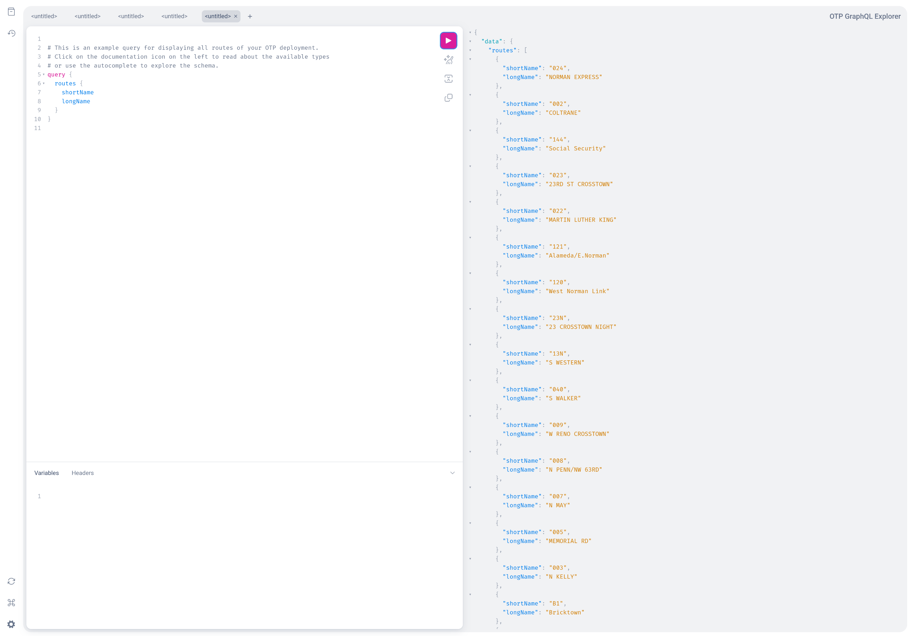

GTFS GraphQL API
The GTFS GraphQL API is a general purpose API which was created for the Digitransit project and is used heavily by digitransit-ui.
otp-react-redux has also migrated to this API in 2023.
There is also a Java client available which makes it easy to use this API in a Java application.
URLs
- GraphQL endpoint:
http://localhost:8080/otp/gtfs/v1 - HTML schema documentation: https://docs.opentripplanner.org/api/dev-2.x/graphql-gtfs/
- Built-in visual GraphQL client: http://localhost:8080/graphiql (note the additional
i!)
Built-in API client
A browser based GraphQL API client is available at http://localhost:8080/graphiql

curl example
A complete example that fetches the list of all stops from OTP is:
curl --request POST \
--url http://localhost:8080/otp/gtfs/v1 \
--header 'Content-Type: application/json' \
--header 'OTPTimeout: 180000' \
--data '{"query":"query stops {\n stops {\n gtfsId\n name\n }\n}\n","operationName":"stops"}'
Configuration
The API is enabled by default.
If you want to disable it, do it in otp-config.json: